Tutorial 1: Getting started¶
The first tutorial will show you the basic elements of the web site using the available example projects. The following tutorials will show you how to start a project with your own data.
Projects section¶
Create example projects¶
To load an example project, go to the Project tab and click on the Create button.
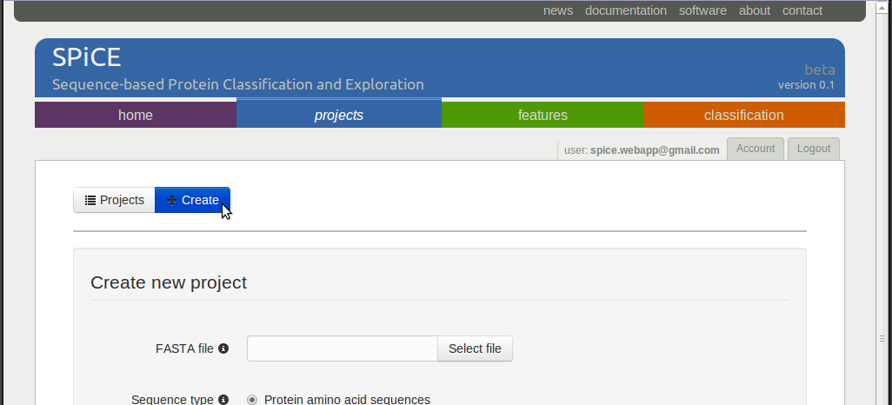The Load example project section at the bottom of the page shows a list of example projects. Select one of the projects, for example the yeast-expression project, and click on the Load project button to initiate the example project.
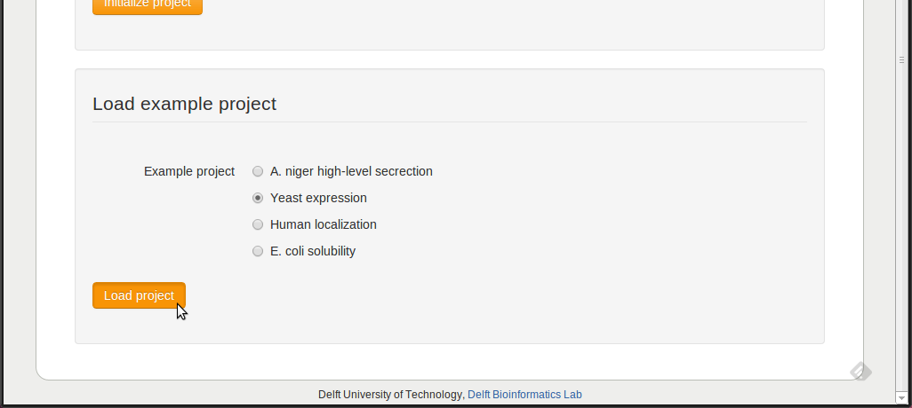Activating projects¶
After project creation, you will be redirected to the list of available projects, which should now contain the created example project. For the figure below, a second example project was loaded, so that the table shows two available projects.
The projects table provides a link to the project’s details page in the first column, the project initiation time in the second column, and a delete link in the third column. The delete link will delete all files related to the project, so be carefull with that.
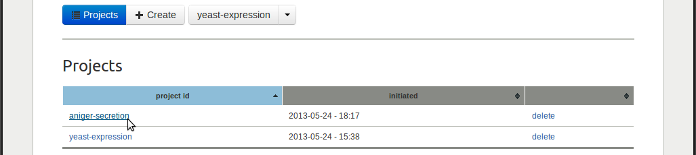Notice that the user bar, situated underneeth the main tabs, indicates which project is currently active. Clicking the link will redirected you to the details page of that project.
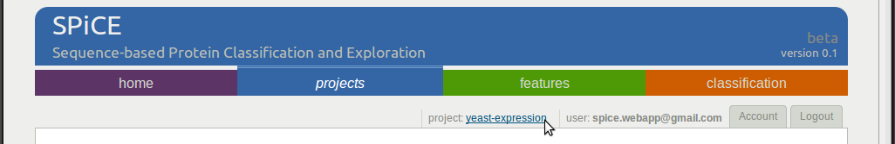If you have multiple projects, an additional select project link will appear, which allows you to activate another project. It is important to notice that the features and classification sites will always show the data of the active project. Remember that the user bar always shows you which project is active.
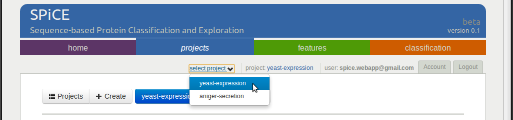Project details¶
Activating a new project will always redirect you to that project’s details page. On this page, the active button (blue) shows the name of the project.
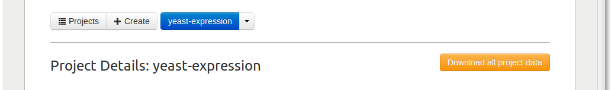If you have multiple projects, this button turns into a drop-down button where you can select one of the projects (the same as in the user bar).
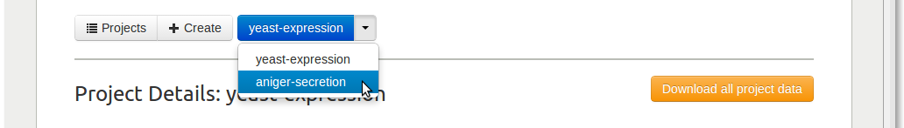If you click the Download button on the right, all data of the currently active project will be zipped into a zip-file and downloaded to your computer. The zip-file contains all project data: the sequence data, calculated features data, and trained classifiers data.
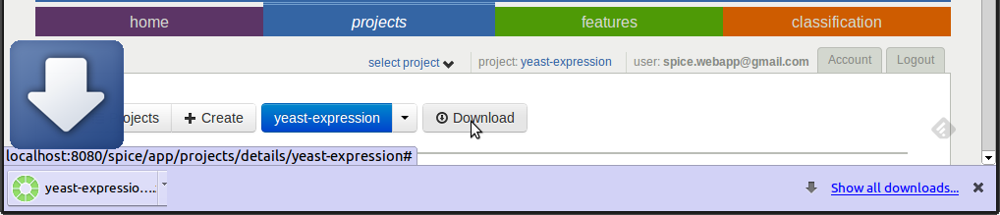Protein sequece data¶
The Protein sequence data shows the available sequence data for this project. In this case, both ORF (nucleotide) and protein (amino acid) sequences are available. With the download link you can download the corresponding fasta files to your computer. If you have fasta files with (predicted) secondary structure or solvent accessibility sequences, you can use the upload links to upload them.
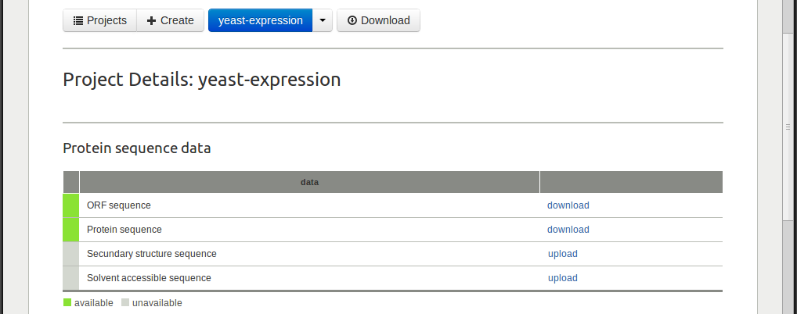Protein labelings¶
The Labeling table shows the available labelings for this project. A labeling is a mapping from each protein to a label, thereby separating the set of proteins into different classes. For example, the expression labeling of the yeast-expression splits the 2000 proteins into two classes: 1000 proteins with the label low, and 1000 proteins with the label high. All projects obtain a default labeling upon project creation. This is the one_class labeling, in which all proteins obtain the same label (all).
For every labeling, the table shows: the name of the labeling in the first column; the different classes and the number of proteins per class in the second column, the number of classes in the third column, and a download link in the third column.
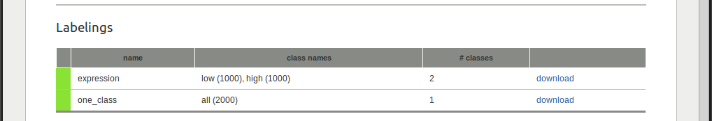Use the form below the table to upload additional labeling files.
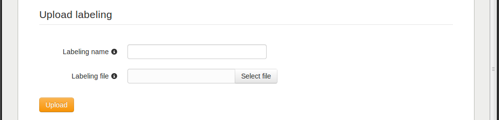Features section¶
The features section provides feature calculation and visualization of the feature data.

A list with sequence-based feature categories is shown in the table. The first column gives the name of the feature category. The second shows what sequence data is required to calculate the features of this category. If the features are not calculated yet, the third column provides a calculate link that will start feature calculation. In the second column, the sequence data that is not available is grayed out. The feature calculate link is disabled if not all sequence data is available.
Feature calculation¶
Clicking the calculate link will put a feature calculate job in the job queue on the compute server. The color of the first color indicates the current status of the job: yellow for waiting in the queue, blue for running, red if an error occured, and green if the features are successfully calculated.

Upload a feature matrix¶
The Upload button can be used to upload your own feature matrix. The upload feature matrix form allows users to upload a matrix file containing the feature values and a text file with protein ids.


Feature statistics¶

Histograms¶

Scatter plots¶

Clustered heat map¶


{kind=link}
{kind=link}
{kind=link}
{kind=link}
{kind=link}
{kind=link}
{kind=link}
{kind=link}
{kind=link}
{kind=link}
{kind=link}
{kind=link}